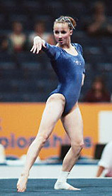

Kristin Maloney (USA)
1998 Goodwill Games B
Champion
2000 Olympics Team Bronze Medalist

Olympic Games: 1 Bronze
Kristin was born on March 10, 1981, in Pen Argyl, Pennsylvania and trained at the Parkettes club in Allentown. She was one of the USA's top female gymnasts from 1997 to 2000, and her amateur career culminated in a berth on the 2000 Olympic team. Following the Sydney Games, Kristen entered UCLA on a full gymnastics scholarship. She missed two seasons due to injuries and/or surgery, but ended her collegiate career on a high note -- 2nd AA and two individual titles at the 2005 NCAA Championships. In April 2009, the IOC stripped the Chinese team of the bronze medal they won in Sydney, after confirming that one of their gymnasts had been under the age limit. The medals were awarded to the USA team, which the women received at a ceremony held during the 2012 US Championships.
Competition Results
1990
Pennsylvania State Meet (Level 7): 3rd B, 4th Team
1991
Christmas in Annapolis Meet (Level 9):
2nd Team, 1st AA, 1st V, 1st B, 3rd UB, 3rd FX
Keystone Games: 2nd AA
Parkette Open (Level 8): 5th UB
1992
Keystone Games: 5th V
1993
Jr. American Classic: 23rd AA
Jr. US Championships: 14th AA
Jr. US Classic: 7th AA
1994
Jr. American Classic: 8th AA
Jr. US Championships: 9th AA
Jr. US Classic "A": 4th AA
US Olympic Festival: 5th AA, 2nd FX
1995
American Classic: 24th AA
Catania Cup: 6th AA
Massilia Cup: 4th B
US Championships: 25th AA
US Classic: 7th AA
1996
American Classic: 10th AA
Pacific Alliance Championships: 5th AA
US Championships: 14th AA, 4th FX
US Classic: 7th AA
US Olympic Trials: 16th AA
World Stars: 9th AA, 5th B, 5th FX
1997
American Classic: 1st AA
American Cup: 6th AA
Intl. Team Championships: 2nd Team, 2nd AA
US Championships: 4th AA
USA-AUS Dual Meet: 1st Team, 1st AA
World Championships: 6th Team, 13th AA, 7th B
1998
American Classic: 1st AA
American Cup: 3rd AA
Goodwill Games: 1st B
Intl. Team Championships: 1st Team, 1st AA
Pacific Alliance Championships: 1st AA, 3rd B, 4th UB
Parkette Invitational: 1st AA
US Championships: 1st AA
1999
Intl. Team Championships: 2nd Team, 2nd AA
US Championships: 1st AA, 2nd B, 6th UB
World Championships: 6th Team
2000
Olympic Games: 3rd Team, 19th AA
US Championships: 2nd AA
US Olympic Trials: 3rd AA
2001
NCAA Championships: 1st Team, 3rd B
2004
NCAA Championships: 1st Team, 8th AA, 5th UB
2005
NCAA Championships: 3rd Team, 2nd AA, 1st V, 1st B, 11th FX
This page was created on January
16, 2005 and was last updated on September 15, 2020.
© Gymn Forum